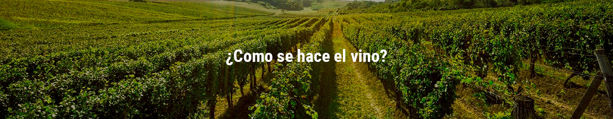

¿Qué es Saberes y sabores?
Saberes y sabores es el lugar donde los que quieren aprender de vinos se juntan , es el lugar donde los amantes del vino pueden encontran nuevas maneras de disfrutar esta bebida milenaria y donde las personas que se ven recientemente atraidas por esta bebida pueden aprender mejores maneras de disfrutar el vino , de la mano de los expertos de Vinos Boutique Argentina que Escriben en esta seccion dedicada a todas las personas que buscan este tipo de nuevas experiencias.
¿Como se hace el vino?
Cuidado de las uvas en el viñedo
Para elaborar un buen vino necesitamos buenas uvas.Estas provienen de un viñedo con un suelo adecuado, con exposición correcta al sol. El viñedo debe estar en el lugar adecuado de latitud y altitud, y todas estas condiciones estar adaptadas al tipo de uva que haya plantada. Una variedad de uva es válida para algunas zonas y no para otras. Uvas como la Albariño no podrían cultivarse en la Mancha, e igualmente una uva como la Shiraz no podrá dar lo que se espera si es cultivada allí donde la Albariño da su máximo potencial… La elaboración de vinos de calidad presta cada vez mayor atención al terruño. De bodegas diseñadas para facilitar un proceso casi industrial, las últimas décadas han visto una evolución a bodegas cuya tecnología pueda servir para trasladar a una botella las calidades de un suelo y una uva. Dicho esto, asumamos que la uva nos llega en perfectas condiciones a la bodega. En la bodega tendrán lugar 3 procesos, todos ellos imprescindibles para la elaboración de vino: la vinificación, la estabilización y el embotellado.
Vendimia
La vendimia es un momento estresante en el viñedo. El viticultor debe decidir cuál es el mejor momento para vendimiar. Si se tarda mucho en vendimiar las uvas pueden tener demasiado contenido de azucar (que se transforma en alcóhol) Es bueno que se espere al momento óptimo de azucar pero puede acarrear un riesgo de heladas en el viñedo... ¡y perder toda la cosecha!
El despalillado
Dicho esto, asumamos que la uva nos llega en perfectas condiciones a la bodega. En la bodega tendrán lugar 3 procesos, todos ellos imprescindibles para la elaboración de vino: la vinificación, la estabilización y el embotellado. Antes de llegar a esos pasos el vino recorre la bodega. En un primer momento se procede al despalillado. En esta tarea los granos de uva se separan de raspones o escobajos. El despalillado total se realiza cuando se busca elaborar vinos suaves.
Estrujado
El prensado no se realiza en el mismo momento para todos los tipos de vino: para vinos blancos el prensado se realiza justo tras la cosecha. En el caso de las uvas tintas, el prensado se realiza sólo después de haber estrujado (y despalillado las uvas) El estrujado es diferente al prensado y no se debe confundir. Con el estrujado se busca extraer mosto que facilite la siembre de levaduras en toda la uva qeu se ha traído a la bodega. Al estrujarse el vino, las uvas se rompen y sueltan jugo. Esto facilita el proceso de fermentación.
Maceración y remontados
En el caso de los vinos tintos el proceso es distinto, y la fermentación se produce mientras están presentes partes sólidas (en la tabla de selección de uva se ha eliminado no obstante todo lo que no se deseaba para que este proceso resulte en el vino que quiere el enólogo) Serán estas partes sólidas que se han conservado, en especial los hollejos, los que aportan los taninos, pigmentos naturales que dan el color a los vinos tintos.
Fermentación de vinos tintos
Durante la fermentación de vinos tintos se debe realizar lo que se denominan remontados. Remontar el vino es un proceso por el que el líquido que se encuentra en el fondo de los depósitos se sube para que tome contacto con las partes sólidas, que flotan en la parte alta del depósito formando lo que se denomina el sombrero. Con este proceso se asegura la extracción correcta de color durante todo el proceso. Otra alternativa es sumergir hacia abajo estas partes sólidas, una técnica que los franceses denominaban tradicionalmente pigeage. Cuando se ha extraído todo el color y todo el aporte que traen los taninos, las partes sólidas se llevan a la prensa y se obtiene el vino de prensa, un vino de menor calidad. Posteriormente pasaremos a la fermentación, que en tintos se produce en dos fases: la fermentación alcóholica en la que los azucsares de la uva se transforman en alcóhol. El proceso de control de la temperatura en esta fase es muy importante con el fin de poder evitar fermentaciones excesivamente rápidas que puedan introducir desequilibrios en la calidad del vino. propiamente dicha y posteriormente la fermentación maloláctica, por la que el ácido málico, más “ácido” se convierte en ácido láctico, proceso por el que se reduce la acidez del vino y se refinan los sabores.
Prensado de la uva
Antiguamente se usaban prensas de madera: son ese tipo de prensa que aún se conservan en Museos de vino o en algunas casas rurales o bodegas que las exponen con orgullo de su pasado. Estas prensas han sido sustituidas por prensas mucho más eficientes, que prensan en posición horizontal, o también por las llamadas prensas neumáticas, con las que las uvas se prensan a partir de la presión que realizan sacos neumáticos. Esto permite el prensado de cantidades pequeñas de uva algo muy útil si pensamos en la elaboración de vinos de parcelas diferentes en pequeñas cantidades por ejemplo… conservando así gracias a la elaboración correcta todo el carácter de las uvas que provienen de una parcela determinada. La fermentación es ese proceso mágico en el que el azúcar que contiene la uva se transforma en alcohol. Para vinos blancos, tras el prensado se produce lo que se denomina desfangado: las partes sólidas se separan del líquido y sólo entonces se procede a la fermentación. En todo el proceso las temperaturas se deben mantener muy controladas, pues una temperatura elevada hace que las uvas fermenten y si lo hacen durante el tiempo en que están presentes partes no deseadas el resultado será un vino diferente al que nos gustaría conseguir. De esta forma se evita que las partes sólidas (hollejos o raspones) puedan aportar al vino partículas orgánicas que aportan un sabor no deseado posteriormente
Fermentación maloláctica
En ocasiones no es conocido que el vino debe "sufir" dos fermentaciones. A la alcóholica, que es la más conocida, sigue la fermentación maloláctica, por la que el ácido málico, más “ácido” se convierte en ácido láctico, proceso por el que se reduce la acidez del vino y se refinan los sabores.
Crianza del vino en roble
crianza es el paso en el que los vinos se introducen en barricas de roble. Este proceso se denomina también crianza oxidativa, ya que el vino se oxida durante el tiempo que pasa en las barricas por la entrada de muy pequeñas cantidades de oxígeno através de los poros de la madera. Esta aportación de oxígeno se combina con la aportación de la propia madera. La madera tiene taninos y estos aportan complejidad (estructura molecular al vino) y sabores y notas de sabor que luego se hacen notorios en la cata.
Trasiegos
Mientras el vino descansa en la bodega el bodeguero debe airear el vino. Hay una creencia popular que piensa que el vino, una vez en su barrica de roble, permanece en la misma sin ser tocado. Esto no es correcto en la mayoría de los casos. Las bdoegas optan por trasegar el vino. El proceso de la trasiega, que forma parte del método bordelés de elaboración, implica mover el vino de unas barricas a otras. Con ello el vino se aíre y las barricas se limipian (con sulfitos)
Clarificación del vino
Clarificación del vino. UNa parte fundamental en la elaboración del vino llega en este momento. El vino debe ser clarificado para poderlo embotellar. En caso de vinos cuya elaboración se ha realizado sin crianza esto se realizará justo después de la fermentación. En el caso contrario, se realizará tras la crianza. De hecho, durante la estancia en barrica los vinos se van clarificando. La clarificación implica limpiar el vino para que no esté turbio, pero también para retirar aquellas particular no deseadas. Una clarificación excesiva, con métodos muy agresivos, puede implicar que el vino quede muy limpio… tanto que se retiren del mismo elementos que le desprotegen (taninos) o que le quitan las propiedades de sabor que se habían buscado. Los procesos tradicionales de clarificación se realizaban con claras de huevo, que al bajar se llevaban con sí todos los sedimentos no deseados.
Embotellado
Tras la clarificación y con un vino ya estabilizado, el mismo se introduce en las botellas, donde seguirá evolucionando antes de salir al mercado. Hay muchos tipos de botellas, el tamaño más común es de un volumen de 75cl, y las formas para este tamaño son muy distintas, si bien la más habitual es la llamada bordelesa. Una vez terminado el proceso de elaboración el vino, queda listo para su consumo. ¡Salud!
¿como se cata el vino?
Fase visual
escorchamos y servimos el vino (poquito ¿eh?). Primero, oler el corcho. Como ya explicamos anteriormente, nos dará pistas. Cogemos la copa, preferiblemente por el tallo o la base, así no calentamos el vino. Inclinamos la copa (unos 45º) sobre un fondo blanco, por ejemplo, una hoja de papel donde haya algún texto. Primero observaremos el color, nos dará una idea de la edad del vino. Por lo general, en un vino tinto, cuanto más rubí o cereza y brillante es el vino, más joven; si es más granate o teja tirando a anaranjado, suele ser un vino más envejecido con crianza. En algunos casos nos será difícil o imposible leer el texto que hay detrás de la copa, diremos que es un vino de capa alta. Cuando podemos ver claramente a través del vino diremos que es de capa baja. Mediremos la densidad del vino. A más densidad, más concentración de alcohol, más graduación. Si movemos ligeramente el vino por la copa, observaremos como caen las lágrimas de vino. A menor velocidad de caída, mayor densidad, más graduación alcohólica.
Fase olfativa
Sin agitar el vino, metemos la nariz y olemos. Primero localizaremos los aromas primarios, son los propios de la uva, de naturaleza frutal o vegetal. Agitamos la copa ligeramente para que el vino entre en contacto con el oxígeno y desprenda más aromas, los secundarios, los que se originan en la fermentación tanto alcohólica como maloláctica, suelen ser más numerosos en vinos jóvenes. Seguimos agitando con más energía para dar paso a los aromas terciarios. Conocidos como bouquet, son complicados de adivinar. Se desarrollan durante y después de la crianza del vino y se clasifican en diferentes familias (animal, vegetal, torrefactos, frutos secos…).
Fase gustativa
El ataque son las primeras sensaciones que percibimos cuando el vino llega a la boca. Con la lengua lo pasamos de un lado al otro y tratamos de apreciar los cuatro sabores básicos: salado, dulce, ácido y amargo. Un vino redondo es aquel que logra el equilibro perfecto entre los cuatro. En segundo lugar determinamos la textura (definida con adjetivos como seda, terciopelo o satén), y aquí es donde interviene el tacto. Notaremos suavidad o untuosidad como factores positivos, o astringencia y rugosidad como negativos. Analizaremos en tercer lugar la vía retronasal. Una vez tragamos el vino – o lo escupimos… si vamos a catar muchos vinos es aconsejable no beber cada uno de ellos, la borrachera puede ser importante – como iba diciendo, una vez lo bebemos, expulsamos el aire por la nariz. Si durante un tiempo percibimos las mismas sensaciones, diremos que ese vino es de larga retronasal. Finalmente, destacaremos qué final nos ha dejado el vino. Puede ser tánico, ácido, etc… puede no tener un final muy definido, incluso puede tener un final poco agradable (sucio). Según la persistencia de ese final se puede hablar de un vino corto (si dura menos de dos segundos), mediano, largo, incluso muy largo (entre nueve y doce segundos). Pues ya lo tenéis, a grandes rasgos, así se realiza una cata. En próximas entradas hablaremos más en profundidad de colores, aromas y otras particularidades de los vinos, tintos, blancos, rosados y espumosos.